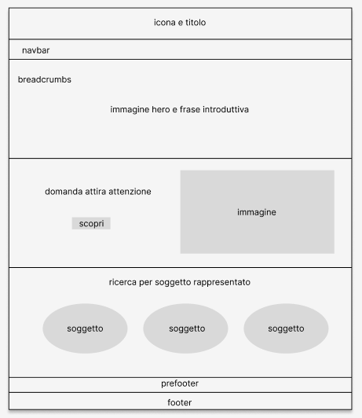
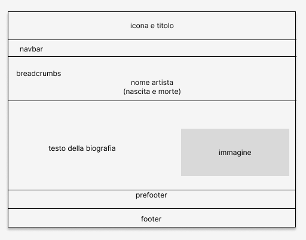
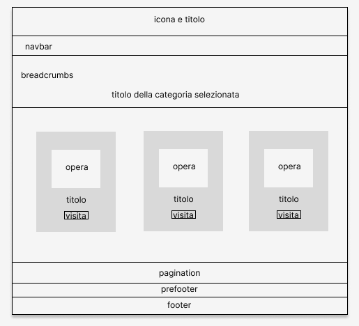
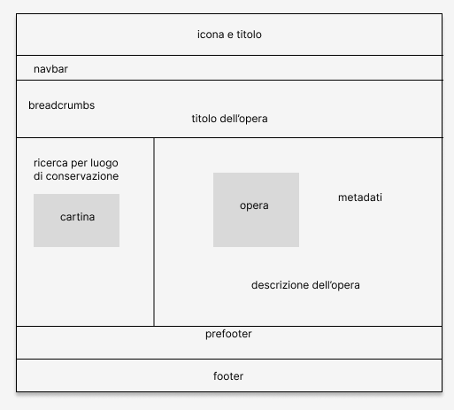

Indice
1.Brief
1.a Obiettivi informativi
Il sito Nature Morte di Paolo Antonio Barbieri ha lo scopo di raccogliere le opere principali di questo artista e dare risalto a codesta figura, lasciata spesso all’ombra della grande notorietà del fratello pittore, denominato Guercino.
1.b Utenza
L’audience alla quale è rivolto questo sito spazia dagli esperti o studiosi di arte ai giovani interessati alla riscoperta di artisti marginali o più semplicemente alle persone curiose che apprezzano la bellezza dell’arte.
1.c Uso dei media e accesso
Volendo rendere l’accesso possibile ad un pubblico vasto è necessario rendere la risorsa visualizzabile su ogni tipologia di device. (Tablet, Pc, Smartphone, ecc.)
1.d Contenuti
I contenuti a disposizione sono immagini ad alta definizione delle opere di Paolo Antonio Baribieri, accompagnate da descrizioni esaustive sull’opera in questione e su tutti gli aspetti che la riguardano. (Confronto con altre opere, rapporto con altri artisti, corrente artistica, ecc.)
2.Benchmark
2.a Idea
Al momento non è disponibile sulla rete una raccolta delle nature morte realizzate da Paolo Antonio Barbieri; tipologia di soggetti nella quale l’artista si è cimentato per tutto l’arco della sua vita. L’idea nasce dunque dalla volontà di dedicare interamente uno spazio virtuale a un artista dalle ammirevoli, ma sottovalutate, doti pittoriche.
2.b Contenuti esistenti
Il sito della Pinacoteca di Cento offre una presentazione di alcune di queste opere che conserva fisicamente nella sua struttura. (https://www.civicapinacotecailguercino.it/collezione/artisti/barbieri-paolo-antonio/) Un'ulteriore descrizione è offerta dal sito di aste Dorotheum che si occupa della compravendita di alcune di queste opere appartenenti a privati. (https://www.dorotheum.com/en/l/2332519/) È possibile trovare qualche informazione sul sito di Bertolami Fine Art, una struttura identificabile con: casa d’aste, galleria d’arte, studio di progettazione di mostre ed eventi culturali. (https://bertolamifineart.bidinside.com/en/lot/20937/paolo-antonio-barbieri-cento-1603-/)
4.Layout
4.a Architettura di interfaccia
4.a.1 Elementi della pagina
In ogni pagina della risorsa sono presenti sempre nella stessa posizione: la testata della pagina con logo e nome del sito, la barra di navigazione principale, il corpo del sito e il piede di pagina con copyright e accesso al Web project plan.
4.a.2 Strumenti di navigazione
Per la navigazione sono stati utilizzati diversi strumenti. La navigazione principale sotto forma di barra di navigazione presente in tutte le pagine del sito, situata nella parte superiore della pagina, appena sotto l’intestazione; la navigazione secondaria attraverso un dropdown a partire da una voce della barra di navigazione; le briciole di pane navigabili per consentire all’utente di orientarsi all'interno della struttura del sito; la navigazione contestuale attraverso una cartina geografica, in box laterale, per ricercare tutte le opere conservate in una stessa città; la metanavigazione nel piede di pagina.
4.b Wireframe
Home Wireframe
Arista Wireframe
Collezione Wireframe
Item Wireframe
5.Usabilità
5.a Architettura
Il posizionamento degli strumenti di navigazione non varia mai all’interno del sito per garantire all’utente una facile ed immediata navigazione. Possibilità di orientarsi grazie alle briciole di pane situate nella fascia superiore della pagina web. La risorsa è visibilmente suddivisa in fasce, riguardanti contenuti differenti per assicurare una chiarezza nell’esplorazione del sito. Costate possibilità di tornare alla schermata home tramite: il logo in testata, la barra di navigazione principale e le briciole di pane navigabili
5.b Aspetto e tipografia
Nella realizzazione del sito sono stati utilizzati gli stessi colori in tutte le pagine e un unico font chiaro e semplice per essere il più possibile leggibile. Non sono presenti testi lunghi e nel caso siano presenti è stata aumentata a dovere l’interlinea per permettere una facile lettura. Le differenti parti del sito sono state distinte graficamente attraverso l’utilizzo di colori diversi per lo sfondo. Per la presentazione della collezione di opere, sono state utilizzate delle card con brevi descrizioni per mantenere ben distinte le opere tra loro e permettere all’utente di concentrarsi su un elemento alla volta.
5.c Colori, icone, font
Per tutto il sito ci si è serviti di tre colori per ottenere un impatto chiaro e immediato. In testata è stata utilizzata un’icona che rappresenta in generale il tema trattato dalla risorsa, ovvero l’arte. Questa icona è presente anche nella scheda nella parte superiore del browser utilizzato, per favorire all’utente il riconoscimento istantaneo della scheda in questione. Il font adoperato in tutto il sito è semplice e chiaro.
6.Servizi
6.a Strumenti d browsing
Nella Home è presente il sistema di browsing per soggetto rappresentato nei dipinti (vivande, oggetti o selvaggina). Nella collezione è presente la pagination nella parte inferiore della pagina. Nell’item si trova la ricerca attraverso la carta geografica dei luoghi in cui sono custodite le opere della raccolta.
6.b Strumenti di interazione
Sia nella home che nella pagina della collezione sono presenti bottoni che permettono all’utente di esplorare il contenuto esposto brevemente nella pagina in questione. Inoltre gli elementi della collezione sono presentati in profile cards. Un altro strumento di interazione presente è un dropdown nella barra di navigazione principale.
7.Bibliografia
7.a Testi
I testi sono stati attinti da Wikipedia
7.b Immagini
Alcune immagini sono state prese da Wikipedia, altre appartengono al creator Clara Tassinari.
7.c Strumenti e tools
Per la costruzione del codice sono stati utilizzati gli strumenti forniti da W3School, Bootstrap, Google Fonts, Free Online Image Map
7.d Applicazioni
Per la scrittura del testo in HTML è stato utilizzato il programma Sublime text.